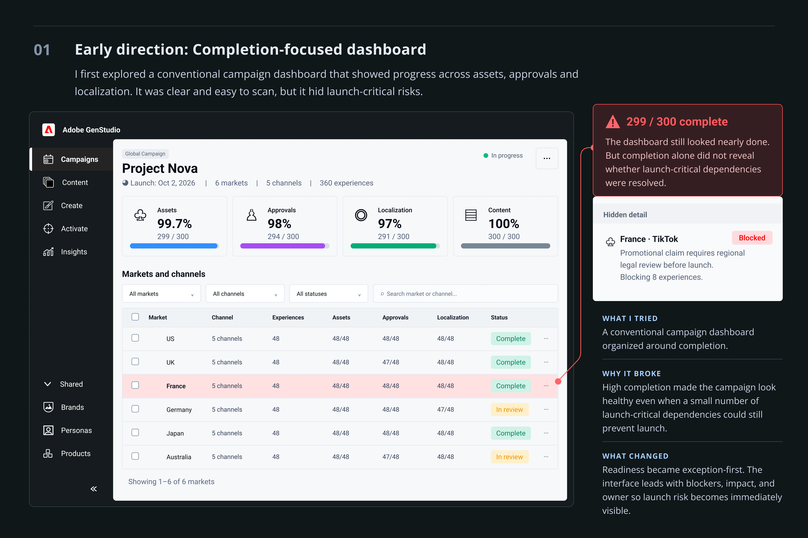
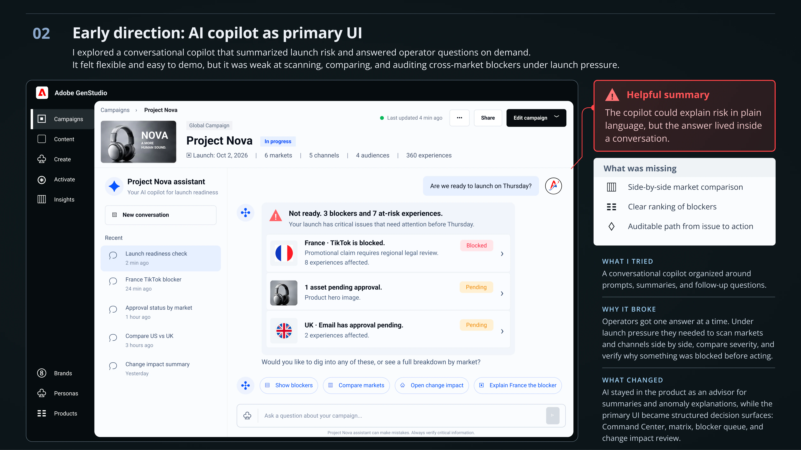
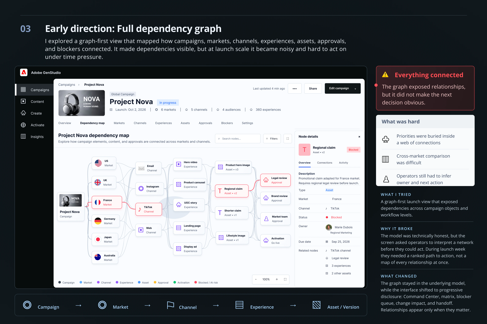

Walkthrough
Readiness was reconstructed, not shown.
Operators opened Workfront for tasks, AEM for assets, and review for approvals, then rebuilt a mental model of launch risk. Often in a spreadsheet or Slack thread the night before go-live.
Adobe · Enterprise product design
AI made it cheap to create hundreds of campaign experiences. The hard job moved to a quieter question three days before launch: are we actually ready? And if not, what blocks us, what does it affect, and who acts next?
Proposed product exploration, not shipped. Concept-tested with 5 campaign operations participants. Baselines are estimates and targets are proposals.
At a glance
Why this problem
Creation scaled. Coordination didn’t.
An illustrative model, not Adobe customer data, shows how quickly experience count grows once markets, channels, audiences, and variants multiply.
6 markets× 5 channels× 4 audiences× 3 variants= 360 experiences
Each experience can carry its own version, approval, localization, and activation state. 299 of 300 assets can be “done.” If the missing one is the required product hero, the campaign is not 99.7% ready.
That gap between status and readiness is the design problem I took on.
Evidence
No proprietary customer logs. The research drew on three inputs, chosen to ground the design in real operational constraints. The quote below is paraphrased from those sessions.
Research inputs
GenStudio, AEM DAM, and Workfront workflows, traced to see how status and task dependencies travel across system boundaries.
Enterprise campaign management patterns, multi-market localization pipelines, and Workfront orchestration structures.
Semi-structured interviews and scenario mapping with 10 people: 4 product designers, 1 UX researcher, 2 product managers, and 3 engineers working on enterprise campaign tools.
Walkthrough
Operators opened Workfront for tasks, AEM for assets, and review for approvals, then rebuilt a mental model of launch risk. Often in a spreadsheet or Slack thread the night before go-live.
Failure mode
A master offer or hero change after approval invalidated localized or already-routed experiences, with no clear impact map. The team found the fallout during activation prep, not at change time.
Constraint
Stakeholders were open to AI summaries and anomaly flags. Compliance review and regional overrides had to stay human-gated. That constraint became the principle “AI advises; policy governs; humans decide” before any UI existed.
Handoff gap
When ops routed a blocker into Workfront or AEM, the campaign, market, channel, and reason it was launch-critical often had to be explained again. Carrying context across tools became a requirement.
Operator signal
“I can tell you every asset’s status. I still can’t tell you if we should launch on Thursday.”
Paraphrased. That question is the one the Command Center has to answer first.
Hypothesis
Shifting the operator’s mental model from “how complete are we” to “what blocks launch, and what depends on it” should cut time to a launch decision under pre-launch pressure. The concept test below checked this.
Failure modes
High completion with one launch-critical asset missing. Inventory said ready; the launch wasn’t.
Blocked items without an owner, due date, or downstream impact. Visible, but no path to action.
A global “update all” after a copy change threatened legitimate regional variants.
Design problem
Primary user: Campaign Operations, three days before a major launch. Creative, brand, legal, regional, and activation teams still own their work. This layer coordinates the decision without taking control from specialists.
I framed the product around that question, then around the follow-ups operators ask when the answer is no. These questions became the information architecture.
The rule I held: if a screen didn’t answer one of these questions, it didn’t make the core set, however useful it looked as a report.
Evolution
I explored three directions before the final one. Each looked right in a review and failed the operator under launch pressure.



Solution
Each screen answers one question in order: from uncertainty to a defensible launch decision, then into the right specialist tool, and back to an updated readiness state.
The moment is three days out. I led with critical blockers and readiness by dimension, not vanity KPIs or a single AI score. Asset readiness reads 99.7%; launch readiness reads 78% with 3 blockers. Both are true, and the second one decides the launch.
Shows Launch countdown · Readiness by dimension · Critical vs waiting · Market and channel risk · Data freshness
Markets as rows, channels as columns. Each cell is Ready, Needs review, Blocked, or N/A, shown with an icon and a label, never color alone. A critical-only mode cuts the grid to what can delay launch week.
Ranked by launch criticality, dependencies, deadline, and severity, not by when the issue arrived. The side panel follows one pattern for every blocker: state, cause, impact, owner, action. The scenario that runs through every screen starts here: France · TikTok.
The master claim changes from “Save $100” to “Save 25%.” Before anything is applied, every affected experience is classified. Nothing ships through a blind “update all.”
Classifies Safe to update · Local override or review · Previously approved · Already activated · Unknown data
What changed (copy, image, layout, or CTA) decides which review is required. Work routes into Adobe Review, Workfront, or AEM with the campaign context attached, and readiness recalculates when it comes back.
Prototype
A working prototype of the five screens, with sample data. A short guide shows what to click at each step, from the Command Center to a routed review. It takes about two minutes, and every other tab, filter, and button works too.
Loads here. About 2 minutes, 5 steps.
Built for screens 1280px and wider. It opens on a phone, but works best on a laptop or desktop.
Tradeoffs
In each case the obvious option was reasonable. It failed the operator three days before launch.
01 · Primary model
I chose exception-first readiness over complete inventory. See direction 01 in How the model evolved.
02 · Interaction model
I chose structured decision surfaces, with AI as an advisor for summaries and anomaly explanations. See direction 02 in How the model evolved.
03 · Complexity exposure
I chose progressive disclosure: Campaign → Market → Channel → Experience → Asset/Version. See direction 03 in How the model evolved.
04 · Change propagation
Scenario: the master headline changes from “Save $100” to “Save 25%.” A single update-all would be fast and dangerous. Regional offers, prior approvals, and already-activated experiences carry different risks.
I chose Change Impact as its own screen: classify safe, needs review, local override, activated, and unknown, then apply only what policy and people allow. Slower, but nothing breaks silently.
05 · Automation boundary
A single AI readiness score would feel decisive. It would also create false confidence when data is stale or incomplete.
I chose readiness by dimension, with data freshness and unknown states shown. Automate deterministic, low-risk actions; escalate ambiguity. The scoring model stays a cross-functional definition, so I didn’t invent an algorithm for this case.
Principles
Surface what needs attention. Don’t make ops inspect healthy objects.
Show what a change affects before it propagates.
“Blocked” without why, impact, and owner is incomplete.
Global updates must not silently overwrite regional decisions.
No probabilistic auto-approval for legal or compliance.
Handoffs into Adobe tools carry the campaign, object, blocker, and action.
Outcomes
Each measure maps to an operator job. Today’s figures are working estimates from workflow observation. Targets are what I proposed for a production rollout. Concept test results follow below.
| Operator job | Measure | Today (est.) | Target |
|---|---|---|---|
| Answer readiness | Time to a confident “ready / not ready” | ~2.5–4 hrs | < 35 min |
| Find the critical blocker | Time to identify the launch-critical blocker and its owner | ~45–90 min | < 10 min |
| Understand impact | Correct downstream impact in a change scenario | ~55–65% | ≥ 90% |
| Avoid unsafe changes | Global applies made without an impact review | Common path | 0 without a gate |
| Trust the state | Self-reported confidence in the readiness answer | ~3 / 5 | ≥ 4.2 / 5 |
| Fewer late surprises | Launches with a critical blocker found < 48h before go-live | ~30–40% | < 15% |
Validation
5 participants, experienced campaign operations managers and enterprise marketing producers, ran four pre-launch tasks on the desktop prototype. Times come from the prototype with sample data. They show the model works, not real-world savings.
19 / 20tasks completed without help 0unsafe applies 4.6 / 5average confidence
Task 1
5 / 5 unaided · 18 s average · confidence 4.8 / 5
No errors. One participant paused to compare the 99.7% asset figure with the 78% launch readiness score before answering.
“Usually I’d have to ping three regional leads on Slack to know if we’re actually good for Thursday. Seeing 78% right next to the 3 blockers immediately tells me we’re not ready without me having to guess.”
Task 2
5 / 5 unaided · 42 s average · confidence 4.6 / 5
One participant opened campaign settings first, then found the blocked cell in the matrix.
“The side drawer giving me the root issue, owner, and the exact 8 affected experiences in one view is huge. I don’t have to open Workfront in another tab to figure out who owns the legal hold.”
Task 3
4 / 5 unaided · 1 min 15 s average · confidence 4.2 / 5
One participant needed a prompt to find the Change Impact entry point. Two hesitated over the difference between “Local override” and “Previously approved.” This was the weakest task, and it shaped the changes below.
“Normally a copy change like this terrifies me because someone hits ‘apply all’ and wipes out custom French pricing.”
Task 4
5 / 5 safe · 35 s average · confidence 4.9 / 5
No unsafe applies. The impact gate kept regional overrides out of the bulk update for every participant.
Iterations
01 · Command Center
In Task 1, the 99.7% asset figure drew attention before the 78% launch readiness score.
I changed the hierarchy. Launch readiness leads as the large card with the critical blockers beside it. Asset readiness became a secondary figure that reads “1 asset pending.”
02 · Change Impact
In Task 3, participants paused to work out how “Local override” differs from “Previously approved.”
Next iteration: inline definitions and an icon for each class, so operators know why an experience is flagged before any bulk action. Not yet in the prototype.
03 · Handoff
Participants wanted proof that the regional legal reviewer in Workfront would understand the urgency without a follow-up message.
I changed the handoff panel to lead with “Context preserved”: campaign, market, channel, owner, and due date travel with every request, followed by why it was routed.
Reflection
What held up
Treating readiness as a derived property of the campaign, not a progress bar. Once the screens followed the operator’s questions in order, the scope stayed small: five screens inside an ecosystem I deliberately didn’t redesign.
Test first
Whether operators trust a readiness answer when data freshness is low. Whether critical-only mode hides something they need. Whether legal reviewers find the routed context complete enough to act without asking again.
Open question
The readiness scoring definition. It belongs to operations, legal, and engineering together, not to design alone. My next step would be a draft model reviewed with all three before building further.